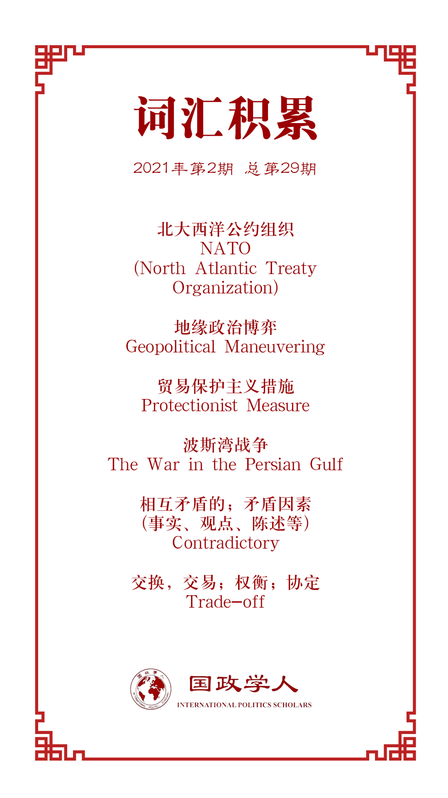

收录于合集 #美国研究 24个

作品简介
【作者】 Liviu Horovitz，布鲁塞尔自由大学欧洲研究院瑞士国家科学基金会博士后研究员。主要研究方向为美国外交政策、国际关系理论。
Elias Götz，瑞典乌普萨拉大学俄罗斯与欧亚研究所研究员，主要研究方向为国际安全研究、国际关系理论以及俄罗斯外交政策。
【编译】 阮含含（国政学人编译员，辽宁大学国际经济政治学院硕士）
【校对】 朱家羲、唐一鸣
【审核】 丁伟航
【排版】 韩心蕊
【美编 】李九阳
【来源】 Liviu Horovitz & Elias Götz (2020): The overlooked importance of economics: Why the Bush Administration wanted NATO enlargement. Journal of Strategic Studies.
DOI:10.1080/01402390.2020.1819799
【归档】 《国际关系前沿》2021年第2期，总第29期。
期刊简介
《战略研究杂志》（JOURNAL OF STRATEGIC STUDIES）是一份涵盖军事和外交战略研究的同行评议学术期刊。它成立于1978年，由约翰·古奇(利兹大学)担任创始主编。现任主编是乔·马诺洛(伦敦国王学院)和托马斯·G·马肯(约翰·霍普金斯大学)。主要研究领域涵盖人类如何面对实现政治目标的挑战、当代安全和持久争议、将历史和理论方法结合研究现代战争、以及国防政策和现代战略研究。2019年期刊影响因子达1.816。
为什么布什政府想扩大北约
The overlooked importance of economics: why the Bush Administration wanted NATO enlargement
Liviu Horovitz
Elias Götz
内容提要
本文认为，在1991-1992年间，乔治·H·W·布什政府决定扩大北约是为了确保欧洲的稳定和延续美国对欧洲的影响力，这是实现美国国家安全这一长期目标和促进美国繁荣这一中期目标的必要辅助。布什政府官员表示，欧洲的政治动荡、贸易保护主义和自我吸收可能威胁到美国主导的经济全球化，将北约置于冷战后欧洲秩序的中心是最好的应对措施。北约的扩大将缓解欧洲的安全顾虑、防止出现危及北约的地区性安全结构并为华盛顿鼓励欧洲参与美国主导的全球经济秩序提供必要的筹码。
文章导读
根据Joshua Shifrinson的研究，乔治·赫伯特·沃克·布什（以下简称“布什”）政府早在1992年的春天就决定要扩大北大西洋公约组织（以下简称“北约”）。他认为华盛顿赞成扩大北约是为了压制俄罗斯和西欧对美国卓越地位的潜在挑战。然而，对于布什政府为何赞成这一行动方针依然有令人困惑的地方。如果是为了在欧洲成为美国的战略竞争对手之前先发制人，那为什么要继续为其提供安全呢？如果说是害怕俄罗斯重返大国地位，那为什么要援助莫斯科的改革呢？为什么不缩减近海开支并对欧亚分而治之呢？为什么不利用美国强大的力量来破坏欧盟形成的政治经济前提呢？此外，鉴于俄罗斯的虚弱和欧洲的民主信誉，为什么一开始就断定这两者都可能威胁到美国的安全呢?
本文基于Joshua Shifrinson对1991-1992年布什政府内部扩大审议的详细概述，将其与华盛顿的首要任务、更广泛的政治经济设计和地区战略联系起来，以解释布什政府对待欧洲的态度。本文认为，华盛顿不仅要通过北约提高影响力，而且还要维护欧洲大陆的稳定。随着苏联的解体，长期持续的地缘政治危险逐渐消退，但美国的决策者仍然关注长期和短期的安全威胁:从长远来看，防止另一场全球性冲突；短期来说，避免诸如核扩散或地区冲突等较小但往往更为模糊和紧迫的威胁。尽管如此，除了这些与安全相关的问题之外，促进经济全球化也是美国持续参与全球事务的最重要动力。
具体来说，本文认为布什时期政府认为欧洲的稳定和美国对欧洲的影响力在经济全球化进程中不可或缺。美国在欧洲的参与可视为对其安全的承诺，同时也确保了欧洲的商业开放和国际经济合作。为了增强美国安全承诺的信誉并确保北约在冷战结束后的欧洲秩序中发挥中心地位的作用，华盛顿的决策者得出结论，必须扩大同盟。
01
布什政府的根本目标
时任美国国务卿的Lawrence Eagleburger在1993年1月致其继任者Warren Christopher的重要过渡备忘录中指出，美国外交政策的根本目的是确保美国人民的安全与繁荣。而当前最重要的“全球挑战”是“日益相互依存和竞争的国际经济”的出现。美国的国内经济增长和就业比任何时候都更加依赖出口，而出口又取决于全球经济的扩张和“美国竞争力的提高”。
美国的繁荣与全球经济有着千丝万缕的联系。在战后的经济扩张中，美国已经实现了“完全共享”，自由市场不可避免地同时创造了赢家和输家。然而历史表明，市场导向的规则对美国自由企业的“繁荣”至关重要。经济竞争对手正在迎头赶上，但合理的政策选择可以让美国继续成为世界上最大、最富有的国家以及最具生产力的经济体——从而从全球化中获得最大的利益。因此，布什政府的主要目标不仅是要开放市场，而且要“以最大限度地支持全球经济贸易自由化趋势的方式”进行。布什政府的官员还认为，政治不稳定是对其宏观经济计划最大的挑战。他们认为在冷战结束后，美国继续介入世界事务是解决这一问题的最佳方法。
欧洲在这些关切的问题中发挥着重要作用。一方面，欧洲大国之间加强经济联系可以促进稳定并保证扩大区域市场，最终可以帮助发展全球经济，这也是美国的长期利益。此外，欧洲精英们希望拥有一个政治上更加一体化的大洲，这也是要容纳一个统一的德国的必要条件。另一方面，一体化的欧洲将会变得更具凝聚力，并积极地捍卫其利益。但同时美国也担心欧洲一体化会使欧洲在经济上滑向贸易保护主义，在政治上滑向左倾。
这些政治经济挑战促使华盛顿决定继续承担欧洲大陆的安全责任。除了促进稳定之外，美国的参与还试图保持跨大西洋的制度性相互依赖，这将有利于欧洲的开放市场。虽然美国在北约的核心地位不可能随意转化为普遍的影响力。然而，一个强有力的联盟将有足够的影响力来避免欧洲全面的保护主义。归根结底，任何政治色彩的欧洲领导人都会意识到，他们的国家——以及更广泛的欧盟——如果偏离华盛顿的全球经济偏好，可能会付出经济代价并危及欧洲大陆脆弱的安全平衡。
然而，问题是作为冷战结束的“自然产物”，大多数的美国盟友（包括欧洲）对美国安全伞的依赖程度降低，不再愿意屈服于美国。因此，即使欧洲大陆当前处于和平状态，民主制度和资本主义得到了保障，但美国的存在保证了欧洲可能接受全球化所必需的稳定前提，而美国政府也需要一些手段来影响欧盟管理国际经济的方式。综上，美国官员认为，美国作为欧洲的安全枢纽，不仅可以保证欧洲的稳定使美国避免接入欧洲战争，又可以进一步开放并促进经济合作。
02
北约在欧洲的作用及其扩大逻辑
在布什总统任期的最后两年里，就北约扩大问题政府各部门之间达成的共识揭示了为中欧国家提供加入北约机会的复杂理由。在上一节中概述的政治经济考虑因素极大地影响了这一基本原理。为了迅速实现国际经济全球化以增强美国的繁荣，美国政府既需要欧洲的稳定，也需要对欧洲的影响力。为了实现这一双重目标，美国政府试图保留北约作为欧洲大陆的主要安全机构，但这并不容易。一方面，如果联盟的安全保证失信，地区冲突可能会刺激局势动荡，从而损害美国的全球安全和经济利益。另一方面，如果欧洲人建立了平行的安全结构应对地区冲突，北约将失去效力，华盛顿将会失去其影响欧洲的主要杠杆，从而也危及自身的政治经济利益。在这种背景下，华盛顿的决策者得出结论，将北约向东扩大不仅可以避免动荡，还可以避免欧洲率先形成联盟削弱美国对其的影响力。
1990年秋天德国统一后，布什政府得出结论，北约的未来取决于解决欧洲各国政府之间存在的两个相互矛盾的利益：一是希望华盛顿为欧洲大陆提供安全保障，二是鼓励减少欧洲对美国的依赖。然而波斯湾战争以及南斯拉夫种族冲突等挑战激发了欧洲各国不同的需求。一些欧洲国家政府要求华盛顿履行其承诺的安全作用；而其他国家（尤其是法国）则认为，越来越依赖美国的安全保护是有问题的。
与此同时，中欧和东欧国家正在寻找自己在新兴欧洲大陆中的位置。为了进一步实现稳定、民主和富裕，所有国家都想加入西方机构，首先是欧盟。然而，马斯特里赫特进程提高了欧洲国家进入的“门槛”，这一进程加深了欧洲一体化。另外，虽然德国的贸易和投资在中欧和东欧得到极大的增涨，但仍有很多人担心德国将来会利用这种影响力。安全问题也是议程中的一项，这进一步将中欧和东欧推向联盟。鉴于这些原因，中欧和东欧国家开始公开要求与北约进行“密切且制度化”的合作。
这种情况下，布什政府认为如果不扩大北约，欧洲可能会重新走向不稳定或者更有可能最终破坏联盟。现有的地区安全结构不足以应对“旧敌重生”引发的冲突。然而以法国为首的欧洲人将要建立以欧洲为中心的平行安全结构，如果没有其他选择，美国将对此无能为力。糟糕的是，由于北约与西欧安全结构之间的机构重叠，华盛顿将被赋予“间接且隐秘的安全责任”但在欧洲事务上只能说“一点儿话”。联盟是美国最有效发挥影响力和领导力的平台，因此，北约不得不向东扩展。
1992年春季，美国的政策制定者们认定，如果没有真正的进入西方机构的机会，东方那些“受挫的新民主国家”必然会把努力转向西欧安全机构，这是唯一的选择。中欧率先承认，这不是最“理想的局面”，因为任何欧洲安全安排最终都会涉及“小的军事牙齿”。然而，第二好的解决方案总比什么都没有好。此外，布什政府的官员总结说，由于渴望维护自己的安全，中欧人可以尽力证明自己是北约联盟中有用的盟友。中欧国家加入北约将有助于减少法国或未来任何一个以西欧为中心的政府的制度影响力。
03
结论
本文追溯了美国官员如何寻求维护北约的中心地位，以维持欧洲的稳定和对欧洲的影响。此外，本文认为，这两个紧密交织的目标在很大程度上是由更广泛的政治经济优先事项驱动的，即必须确保欧洲继续支持美国建立一体化的全球秩序。实际上，政治经济因素在解释布什政府推动北约向东欧国家开放的努力中起着中心作用，但常常被忽略。
这些发现为一些有趣的反事实开辟了新的研究道路。一些美国官员认为，美国介入欧洲仍然是防止地区动荡的最佳方式，可以避免将来陷入欧洲战争。相反，有的人则认为这一对美国国家安全的威胁已经大大减少。现有的记录不能就安全考虑（在没有经济考虑的情况下）是否足以让华盛顿继续参与欧洲事务得出明确结论。但是，正如本文表明，经济方面的需求也是重要的影响因素，基于此，美国需要一个稳定的欧洲而且要对欧洲保持一定的影响力，从而为产生理想的结果创造足够的动力。如果法国人和其他欧洲人像英国一样热切地希望全球化，那么华盛顿就不需要更大的影响力来引导欧洲走向开放的国际经济秩序。此外，如果法国没有建立以欧洲为中心的安全秩序的尝试，北约就不会受到质疑。最后，如果美国能够早一点下定决心干预南斯拉夫，北约的信誉可能已经恢复，这将极大减轻北约东扩的压力。所有的这一切意味着，布什政府支持北约扩大的结论绝不是预先设定的或系统性的。这一结果是多个偶然事件的发展进程相互影响以及美国战略和政治经济利益相互作用构成的。
译者评述
关于布什政府为什么推进北约东扩，已有的研究对于其原因有多种说法，其中最主流的一种主要侧重于政治性的，认为美国特别是布什政府推动北约扩大是其“防俄大业”的重要一环。布热津斯基曾在《大失控与大混乱》一书中写道：“法西斯主义的不死鸟，在欧洲东部的转世再生。”据此不难看出，在西方国家中，特别是美国眼中，俄罗斯始终是一个“潜在的威胁”。冷战期间，美国主导西欧而俄罗斯主要东欧，欧洲保持着一种微妙的平衡。因此，北约向东扩张首先将处于缓冲地带的中欧拉入阵营中，东扩的趋势形成后，逐渐将俄罗斯的潜在盟友——东欧拉拢进入西方资本主义阵营的可能性就大大提高了。而在苏联解体后，中东欧地区成为真空地带，为了寻求有力的“保护伞”，中东欧国家会纷纷以加入北约的方式表达自己“投诚”的心意。
本文换了一种视角，将主要的重心放在了经济上，认为布什政府在任期的最后推进北约的扩大的重要动力是美国对于经济全球化的需求。因为美国的全球化需要欧洲的助力，而美国对欧洲的影响力是基于北约的杠杆作用，但以法国为首的西欧国家为了降低欧洲在安全问题上对美国的依赖而在内部建立起一种以欧洲为中心的安全结构，使得美国在欧洲显得被动，所以扩大北约以制衡欧洲内部崛起的安全结构组织是必要的。
北约扩大更多可能是经济和政治共同作用的结果所致，一方面，是美国想要进一步巩固冷战成果；另一方面，苏联解体后对美国的安全威胁大大减少，美国对巩固其世界第一大国在经济方面的需求需要欧洲的配合，相互作用下促成北约扩大的结果。
词汇整理

文章观点不代表本平台观点，本平台评译分享的文章均出于专业学习之用, 不以任何盈利为目的，内容主要呈现对原文的介绍，原文内容请通过各高校购买的数据库自行下载。

好好学习，天天“在看”
国政学人
支持学术公益与知识传播
微信扫一扫赞赏作者 __赞赏
已喜欢，对作者说句悄悄话
取消 __
发送给作者
发送
最多40字，当前共字
上一页 1/3 下一页
长按二维码向我转账
支持学术公益与知识传播
受苹果公司新规定影响，微信 iOS 版的赞赏功能被关闭，可通过二维码转账支持公众号。